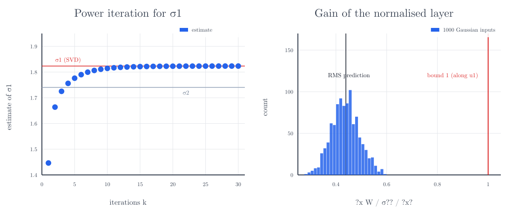
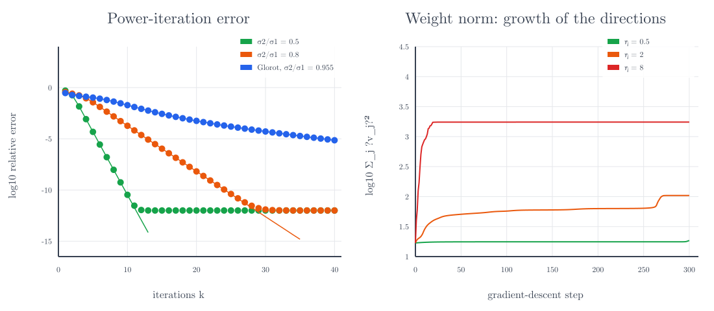
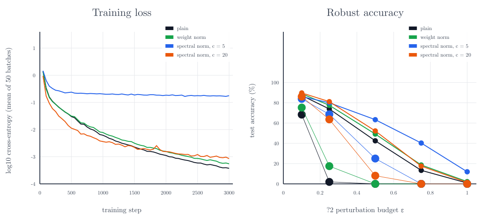

Weight and Spectral Normalisation: Gains, Power Iteration and Lipschitz Margins
Abstract
Weight normalisation writes each column of a weight matrix as a gain times a unit direction. Spectral normalisation divides the whole matrix by its largest singular value, estimated by power iteration. This report verifies weight normalisation's gradient formulas to \(4\times10^{-15}\), and shows that the gradient with respect to the direction is orthogonal to it. The squared norm of the direction therefore grows by exactly \(\eta^2\lVert\nabla\rVert^2\) per gradient step, to \(10^{-15}\), and learning rates that differ by a factor of 16 end up with effective rates within a factor of about 2. For power iteration, an exact formula in terms of the singular values predicts every estimate to \(6\times10^{-12}\). The error falls by \((\sigma_2/\sigma_1)^4\) per iteration, and the gradient of the converged estimate is the outer product of the top singular vectors. On the digits data, spectrally normalised MLPs have a Lipschitz bound of 6.3 to 22 against 65 for a plain network. That certifies 63–68% of the test images against any perturbation of size 0.25, against 2% for the plain network. Training moves the weights faster than one power iteration per step can follow, so the stored estimates lag the true spectral norms by 2–12%.
The problem
The scale of a layer's weights matters in two ways. During training it interacts with the learning rate: the same gradient step changes a small weight vector's direction more than a large one's. After training it bounds how much the layer can amplify a change in its input. Both are hard to control when the scale is spread over all the entries of a matrix. Weight normalisation (Salimans and Kingma, 2016) gives each output unit an explicit length, separate from its direction, which changes the geometry of gradient descent. Spectral normalisation (Miyato et al., 2018) divides each weight matrix by its largest singular value. Every layer is then 1-Lipschitz, which stabilises GAN discriminators and makes a network's sensitivity to its input explicit (Tsuzuku, Sato and Sugiyama, 2018).
This report replaces the original example examples/nn/0_foundations/0.2_reusable_layer_library/weight_spectral_norm.cpp. That example checked weight normalisation's column norms and gradients and showed that the direction's gradient is orthogonal to it. It followed power iteration to the SVD value, with a fresh start and with the vector kept between calls, and checked that the normalised layer shrinks random inputs. All of that is kept.
The two reparameterisations lived in the example helper examples/nn/common/reparam.hpp. They are now part of the library in datamunge/nn/weight_reparam.hpp, together with a Lipschitz bound for stacks of layers. The report adds the exact convergence formula for power iteration, the norm-growth identity of weight normalisation and certified robustness on a dataset.
The method
Weight normalisation
A dense layer \(y=xW+b\) with weight normalisation stores a direction \(v_j\) and a gain \(g_j\) for every column and uses
The library starts with \(g_j=\lVert v_j\rVert\), so the layer initially equals a plain one. Writing \(\hat v_j=v_j/\lVert v_j\rVert\) and \(G_j=\partial L/\partial W_{:,j}\), the chain rule gives
The direction's gradient is the part of \(G_j\) orthogonal to \(v_j\), scaled by \(g_j/\lVert v_j\rVert\). Two consequences follow. First, a gradient step \(v_j\leftarrow v_j-\eta\nabla_{v_j}\) is orthogonal to \(v_j\), so by Pythagoras
exactly, and the norm can only grow. Second, to first order the step changes \(W_{:,j}\) by \(-\eta\,(g_j^2/\lVert v_j\rVert^2)\) times the orthogonal part of \(G_j\). The effective learning rate for the direction of \(W\) is therefore \(\eta g_j^2/\lVert v_j\rVert^2\). Large steps inflate \(\lVert v_j\rVert\) and so lower their own effective rate, which Salimans and Kingma describe as a built-in stabiliser.
Spectral normalisation and power iteration
The spectral norm \(\sigma_1(W)\) is the largest singular value, the most \(W\) can stretch a vector: \(\lVert xW\rVert\le\sigma_1\lVert x\rVert\). Spectral normalisation uses \(W/\hat\sigma\), with \(\hat\sigma\) from power iteration. From a vector \(u\) in the output space, each iteration sets
Since \(v\) is a unit vector, \(\hat\sigma\le\sigma_1\): the estimate never overshoots. Let \(W=U\,\mathrm{diag}(\sigma)\,V^\top\), and let \(c_i\) be the coefficients of the starting vector on the columns of \(V\). Then after \(k\) iterations \(u\propto\sum_ic_i\sigma_i^{2k}V_i\) and \(v\propto\sum_ic_i\sigma_i^{2k-1}U_i\), so with \(A_m=\sum_ic_i^2\sigma_i^m\)
The error falls by \((\sigma_2/\sigma_1)^4\) per iteration once the second singular value dominates the sum, which is slow when the top of the spectrum is flat. In training, \(u\) is stored between steps and refined by one iteration per step (Miyato et al., 2018). As long as the weights move slowly, the estimate keeps converging. The library treats \(u\) and \(v\) as constants, so \(\partial\hat\sigma/\partial W=v^\top u\), which at convergence is \(\partial\sigma_1/\partial W=U_1V_1^\top\).
Lipschitz bounds and certified margins
A stack of dense layers with 1-Lipschitz activations such as ReLU satisfies \(\lVert f(x)-f(x')\rVert\le\prod_l\sigma_1(W_l)\,\lVert x-x'\rVert\), so \(L=\prod_l\sigma_1(W_l)\) bounds its Lipschitz constant. nn::lipschitz_bound computes it with exact SVDs. Each difference of two logits is then \(\sqrt2L\)-Lipschitz.
A classifier whose true logit exceeds every other by a margin \(\mu\) therefore keeps its prediction under every perturbation with \(\lVert\delta\rVert<\mu/(\sqrt2L)\) (Tsuzuku, Sato and Sugiyama, 2018). This certified radius is a guarantee. An attack such as projected gradient descent (PGD; Madry et al., 2018) gives the complementary empirical upper bound on robust accuracy.
For Gaussian inputs \(x\sim N(0,I_d)\), \(\mathbb E\lVert xW\rVert^2=\lVert W\rVert_F^2=\sum_i\sigma_i^2\). The typical gain of a normalised layer is therefore about \(\sqrt{\sum_i\sigma_i^2/d}/\sigma_1\), far below the bound, which only the top singular direction attains.
Simple examples
Weight-normalised gradients and power iteration
The program builds a weight-normalised layer with 5 inputs and 3 outputs and sets the gains to (0.5, 1.5, 3). It compares the gradients of \(L=\sum y\odot r\) from automatic differentiation with the closed forms. It then estimates the spectral norm of a \(64\times32\) Glorot-uniform matrix by power iteration from a random start, and again with one iteration per call and the vector stored between calls. Finally, it measures how much the normalised layer stretches 1000 random inputs.
#include <dm/dm.hpp>
namespace nn = dm::nn;
using nn::Tensor;
using dm::graphics::RGB;
const auto F64 = nn::DType::Float64;
double fmax_abs(const Tensor& t) { return nn::max(nn::abs(t)).item(); }
int main() {
std::filesystem::create_directories("build");
// Weight normalisation of a dense layer with 5 inputs and 3 outputs, batch 4, loss L = sum(y ⊙ r) so dL/dy = r.
nn::Generator g(1);
const Tensor x = nn::normal({4, 5}, 0.0, 1.0, g, F64), r = nn::normal({4, 3}, 0.0, 1.0, g, F64);
nn::ParameterStore p(1, F64);
auto wn = nn::weight_norm_dense(p, "d", x, 3);
std::print("At creation: max |W − v| = {:.1e} (g starts at the column norms of v).\n", fmax_abs(wn.W - p.at("d/v")));
{
nn::NoGradGuard ng;
p.set("d/g", nn::from_vector(std::vector<double>{0.5, 1.5, 3.0}, {3}));
}
wn = nn::weight_norm_dense(p, "d", x, 3);
const Tensor v = p.at("d/v"), gg = p.at("d/g");
const auto grads = nn::grad(nn::sum(wn.y * r), {v, gg, wn.W});
nn::NoGradGuard ng;
const Tensor nv = nn::sqrt(nn::sum(nn::square(v), {0})), nW = nn::sqrt(nn::sum(nn::square(wn.W), {0}));
const Tensor dg = nn::sum(grads[2] * v, {0}) / nv; // (dL/dW_j) · v_j / ||v_j||
const Tensor dv = gg / nv * (grads[2] - dg * v / nv); // (g_j / ||v_j||)(dL/dW_j − (dL/dg_j) v_j / ||v_j||)
const Tensor vdv = nn::sum(v * grads[0], {0});
std::print("\nAfter setting g = (0.5, 1.5, 3):\n\n| column j | norm of v_j | g_j | norm of W_j | v_j · ∂L/∂v_j |\n| ---: | ---: | ---: | ---: | ---: |\n");
for (int j = 0; j < 3; ++j)
std::print("| {} | {:.4f} | {:.4f} | {:.4f} | {:.1e} |\n", j, nv.to_vector<double>()[j], gg.to_vector<double>()[j], nW.to_vector<double>()[j], vdv.to_vector<double>()[j]);
std::print("\nAutograd against the closed forms: max difference {:.1e} for ∂L/∂g and {:.1e} for ∂L/∂v.\n", fmax_abs(grads[1] - dg), fmax_abs(grads[0] - dv));
// Spectral normalisation of a 64 × 32 Glorot-uniform matrix.
nn::ParameterStore sp(2, F64);
const Tensor W = sp.get("W", {64, 32}, nn::init::glorot_uniform());
const auto full = nn::svd(W);
const auto s = full.s.to_vector<double>();
std::print("\nW is 64 × 32; SVD: σ1 = {:.6f}, σ2 = {:.6f}, σ32 = {:.6f}.\n\n| power iterations k | estimate | relative error |\n| ---: | ---: | ---: |\n", s[0], s[1], s[31]);
const Tensor u0 = nn::normal({1, 32}, 0.0, 1.0, g, F64);
std::vector<double> ks, est;
for (int k = 1; k <= 30; ++k) {
const double sk = nn::spectral_norm_power_iteration(W, u0, k).sigma.item();
ks.push_back(k), est.push_back(sk);
if (k <= 3 || k == 5 || k == 10 || k == 20 || k == 30) std::print("| {} | {:.6f} | {:.1e} |\n", k, sk, (s[0] - sk) / s[0]);
}
// One iteration per call with the vector stored between calls, as in training.
nn::ParameterStore params(2, F64), state(3, F64);
(void)params.get("d/W", {64, 32}, nn::init::glorot_uniform());
std::print("\nOne iteration per call, u stored between calls (same W):");
nn::ReparamDense sn;
for (int step = 1; step <= 20; ++step) {
sn = nn::spectral_norm_dense(params, state, "d", nn::zeros({1, 64}, F64), 32, 1);
if (step == 1 || step == 2 || step == 5 || step == 10 || step == 20) std::print(" call {}: relative error {:.1e};", step, (s[0] - sn.sigma.item()) / s[0]);
}
std::print("\n");
const double s_sn = nn::svd(sn.W, false).s.to_vector<double>()[0];
// The gain ||x W_sn|| / ||x|| for 1000 Gaussian inputs, and along the top left singular vector.
const Tensor xs = nn::normal({1000, 64}, 0.0, 1.0, g, F64);
const auto gains = (nn::sqrt(nn::sum(nn::square(nn::matmul(xs, sn.W)), {1})) / nn::sqrt(nn::sum(nn::square(xs), {1}))).to_vector<double>();
const Tensor top = nn::reshape(nn::slice(full.u, {0, 0}, {64, 1}), {1, 64});
const double gain_top = std::sqrt(nn::sum(nn::square(nn::matmul(top, sn.W))).item());
double fro2 = 0;
for (double si : s) fro2 += si * si;
double mean_gain = 0;
for (double q : gains) mean_gain += q / gains.size();
std::print("Largest singular value of W / σ̂ by SVD: {:.12f}.\nGain over 1000 random inputs: mean {:.4f}, range {:.4f} to {:.4f}; sqrt(Σσ_i² / 64) / σ1 = {:.4f}. Gain along the top left singular vector: {:.12f}.\n",
s_sn, mean_gain, *std::ranges::min_element(gains), *std::ranges::max_element(gains), std::sqrt(fro2 / 64) / s[0], gain_top);
auto fig = dm::graphics::RLayout::create(1, 2);
{
auto pl = dm::graphics::RPlot::create();
pl.points(ks, est, "estimate", RGB{37, 99, 235}, 6).abline_h(s[0], RGB{220, 38, 38}, 1.5).abline_h(s[1], RGB{148, 163, 184}, 1.5);
pl.text(4, s[0] + 0.025, "σ1 (SVD)", RGB{220, 38, 38}, 13).text(22, s[1] - 0.02, "σ2", RGB{100, 116, 139}, 13);
pl.x_limits(0, 31).y_limits(1.4, 1.95).title("Power iteration for σ1").x_label("iterations k").y_label("estimate of σ1");
fig.add(pl);
}
{
std::vector<double> centres, counts;
const double lo = 0.25, hi = 1.05, w = 0.0125;
for (double c = lo + w / 2; c < hi; c += w) centres.push_back(c), counts.push_back(0);
for (double q : gains) counts[std::min(counts.size() - 1, static_cast<std::size_t>(std::max(0.0, (q - lo) / w)))] += 1;
auto pl = dm::graphics::RPlot::create();
pl.bars(centres, counts, "1000 Gaussian inputs", RGB{37, 99, 235}, w * 0.9).abline_v(1.0, RGB{220, 38, 38}, 2)
.abline_v(std::sqrt(fro2 / 64) / s[0], RGB{17, 24, 39}, 1.5);
pl.text(0.86, 120, "bound 1 (along u1)", RGB{220, 38, 38}, 13).text(std::sqrt(fro2 / 64) / s[0] + 0.012, 120, "RMS prediction", RGB{17, 24, 39}, 13);
pl.x_limits(lo, hi).y_limits(0, 170).title("Gain of the normalised layer").x_label("‖x W / σ̂‖ / ‖x‖").y_label("count");
fig.add(pl);
}
fig.size(1100, 460).fit_panels();
fig.save("build/spectral_basics.svg");
}At creation: max W − v = 0.0e+00 (g starts at the column norms of v).
After setting g = (0.5, 1.5, 3):
| column j | norm of v_j | g_j | norm of W_j | v_j · ∂L/∂v_j |
|---|---|---|---|---|
| 0 | 0.9060 | 0.5000 | 0.5000 | -2.2e-16 |
| 1 | 1.4635 | 1.5000 | 1.5000 | -4.4e-15 |
| 2 | 0.6688 | 3.0000 | 3.0000 | 0.0e+00 |
Autograd against the closed forms: max difference 0.0e+00 for ∂L/∂g and 3.6e-15 for ∂L/∂v.
W is 64 × 32; SVD: σ1 = 1.823429, σ2 = 1.740530, σ32 = 0.396888.
| power iterations k | estimate | relative error |
|---|---|---|
| 1 | 1.446393 | 2.1e-01 |
| 2 | 1.663690 | 8.8e-02 |
| 3 | 1.725061 | 5.4e-02 |
| 5 | 1.776123 | 2.6e-02 |
| 10 | 1.814347 | 5.0e-03 |
| 20 | 1.822774 | 3.6e-04 |
| 30 | 1.823345 | 4.6e-05 |
One iteration per call, u stored between calls (same W): call 1: relative error 2.4e-01; call 2: relative error 1.4e-01; call 5: relative error 3.7e-02; call 10: relative error 5.5e-03; call 20: relative error 4.8e-04; Largest singular value of W / σ̂ by SVD: 1.000482491722. Gain over 1000 random inputs: mean 0.4376, range 0.2851 to 0.5907; sqrt(Σσ_i² / 64) / σ1 = 0.4392. Gain along the top left singular vector: 1.000482491722.

At creation the effective weights equal \(v\) exactly. After the gains are set, every column of \(W\) has norm exactly \(g_j\), although the columns of \(v\) have norms 0.91, 1.46 and 0.67. Automatic differentiation agrees with the closed forms to \(4\times10^{-15}\), and \(v_j\cdot\partial L/\partial v_j\) vanishes to the same precision.
The matrix has \(\sigma_1=1.8234\) and \(\sigma_2=1.7405\), a ratio of 0.955, so power iteration is slow. One iteration underestimates by 21%, ten by 0.5% and thirty by \(5\times10^{-5}\). Storing the vector between calls gives about the same progress, one iteration per call, from a different random start: \(5.5\times10^{-3}\) after 10 calls and \(4.8\times10^{-4}\) after 20. Because the estimate is still low, the normalised matrix has a spectral norm of 1.00048, slightly above 1, and the layer is 1-Lipschitz only in the limit. Random inputs are stretched by between 0.29 and 0.59, with mean 0.4376 against the Frobenius prediction 0.4392. Only the top left singular vector reaches the full gain, 1.00048.
Checking the theory
Convergence, gradient and norm growth
The program runs power iteration for up to 40 iterations on three \(64\times32\) matrices: two built with \(\sigma_2/\sigma_1=0.5\) and 0.8, and the Glorot one from above. It compares every estimate with \(\sqrt{A_{4k}/A_{4k-2}}\) and the late error ratio per iteration with \((\sigma_2/\sigma_1)^4\). It differentiates the converged estimate and compares the result with \(U_1V_1^\top\). It then trains a weight-normalised softmax regression on all 1797 digits by full-batch gradient descent, for 300 steps at three learning rates. At every step it checks the norm-growth identity and records the effective learning rate \(\eta g^2/\lVert v\rVert^2\).
#include <dm/dm.hpp>
namespace nn = dm::nn;
using nn::Tensor;
using dm::graphics::RGB;
const auto F64 = nn::DType::Float64;
int main() {
std::filesystem::create_directories("build");
nn::Generator g(5);
// Three 64 × 32 matrices: the Glorot-uniform one from before and two with a chosen gap, W = Q1 diag(s) Q2^T.
nn::ParameterStore sp(2, F64);
const Tensor Wg = sp.get("W", {64, 32}, nn::init::glorot_uniform());
auto with_spectrum = [&](double ratio) {
const Tensor Q1 = nn::qr(nn::normal({64, 32}, 0.0, 1.0, g, F64)).q, Q2 = nn::qr(nn::normal({32, 32}, 0.0, 1.0, g, F64)).q;
std::vector<double> s(32);
s[0] = 1.0;
for (int i = 1; i < 32; ++i) s[i] = ratio * (1.0 - (i - 1) / 32.0);
return nn::matmul(Q1 * nn::from_vector(s, {32}), Q2, false, true);
};
struct Case { std::string label; Tensor W; RGB color; };
const std::vector<Case> cases{{"σ2/σ1 = 0.5", with_spectrum(0.5), {22, 163, 74}}, {"σ2/σ1 = 0.8", with_spectrum(0.8), {234, 88, 12}}, {"Glorot, σ2/σ1 = 0.955", Wg, {37, 99, 235}}};
const Tensor u0 = nn::normal({1, 32}, 0.0, 1.0, g, F64);
auto fig = dm::graphics::RLayout::create(1, 2);
auto pl = dm::graphics::RPlot::create();
std::print("Power iteration against the exact formula sqrt(A_4k / A_(4k−2)), A_m = Σ c_i² σ_i^m, c = coefficients of u0 on the right singular vectors:\n\n");
std::print("| matrix | σ2/σ1 | largest relative difference, k = 1..40 | error at k = 10 | measured error ratio per iteration (window) | (σ2/σ1)^4 |\n| :--- | ---: | ---: | ---: | ---: | ---: |\n");
for (const auto& c : cases) {
const auto d = nn::svd(c.W);
const auto s = d.s.to_vector<double>();
const auto coef = nn::matmul(u0, d.v).to_vector<double>();
auto A = [&](int m) { double a = 0; for (int i = 0; i < 32; ++i) a += coef[i] * coef[i] * std::pow(s[i] / s[0], m); return a; };
std::vector<double> ks, err, kf, errf;
double worst = 0, e10 = 0;
std::vector<double> errs;
for (int k = 1; k <= 40; ++k) {
const double est = nn::spectral_norm_power_iteration(c.W, u0, k).sigma.item();
const double exact = s[0] * std::sqrt(A(4 * k) / A(4 * k - 2));
worst = std::max(worst, std::abs(est - exact) / exact);
const double e = (s[0] - est) / s[0], ef = (s[0] - exact) / s[0];
if (k == 10) e10 = e;
errs.push_back(e);
if (e > 1e-15) ks.push_back(k), err.push_back(std::log10(e));
if (ef > 1e-15) kf.push_back(k), errf.push_back(std::log10(ef));
}
// Rate over the last 5 iterations whose errors are well above the 1e-12 floor set by the normalisation guard.
int last = 0;
for (int k = 1; k <= 40; ++k) if (errs[k - 1] > 1e-10) last = k;
const int first = std::max(1, last - 5);
std::print("| {} | {:.3f} | {:.1e} | {:.1e} | {:.3f} (k = {} to {}) | {:.3f} |\n", c.label, s[1] / s[0], worst, e10, std::pow(errs[last - 1] / errs[first - 1], 1.0 / (last - first)), first, last,
std::pow(s[1] / s[0], 4));
pl.points(ks, err, c.label, c.color, 5).lines(kf, errf, c.color, 1.5);
}
pl.x_limits(0, 41).y_limits(-16.5, 4).title("Power-iteration error").x_label("iterations k").y_label("log10 relative error");
fig.add(pl);
// The gradient of the converged estimate is the outer product of the top singular vectors, u1 v1^T in W = U S V^T.
{
Tensor W = Wg.detach().clone();
W.requires_grad_();
const auto e = nn::spectral_norm_power_iteration(W, u0, 400);
const Tensor gW = nn::grad(e.sigma, {W})[0];
const auto d = nn::svd(Wg);
const Tensor outer = nn::matmul(nn::slice(d.u, {0, 0}, {64, 1}), nn::slice(d.v, {0, 0}, {32, 1}), false, true);
std::print("\nGradient of σ̂ after 400 iterations against u1 v1^T from the SVD: max difference {:.1e} (sign fixed by σ̂ > 0: {:.1e}).\n",
std::min(nn::max(nn::abs(gW - outer)).item(), nn::max(nn::abs(gW + outer)).item()), nn::max(nn::abs(nn::abs(gW) - nn::abs(outer))).item());
}
// Weight normalisation under plain gradient descent: since ∂L/∂v_j ⊥ v_j, ||v_j||² grows by exactly η² ||∂L/∂v_j||² per step.
const auto digits = dm::datasets::digits();
const std::int64_t n = 1797;
std::vector<double> px(static_cast<std::size_t>(n * 64));
for (int j = 0; j < 64; ++j) {
const auto col = digits.get_column<double>(std::format("pixel_{}", j)).values();
for (std::int64_t i = 0; i < n; ++i) px[i * 64 + j] = col[i] / 16.0;
}
const Tensor X = nn::from_vector(px, {n, 64});
const Tensor y = nn::cast(nn::from_vector(digits.get_column<double>("digit").values(), {n}), nn::DType::Int64);
auto pr = dm::graphics::RPlot::create();
std::print("\nWeight-normalised softmax regression on all 1797 digits, full-batch gradient descent, 300 steps:\n\n| learning rate η | Σ_j norm(v_j)² at start | at end | largest per-step identity error | effective learning rate η g²/norm(v)², start → end |\n| ---: | ---: | ---: | ---: | ---: |\n");
const std::vector<std::pair<double, RGB>> rates{{0.5, {22, 163, 74}}, {2.0, {234, 88, 12}}, {8.0, {220, 38, 38}}};
for (const auto& [eta, color] : rates) {
nn::ParameterStore p(1, F64);
(void)nn::weight_norm_dense(p, "d", nn::slice(X, {0, 0}, {1, 64}), 10);
std::vector<double> steps, norm2, logn;
double worst = 0, first_eff = 0, last_eff = 0;
for (int t = 0; t <= 300; ++t) {
const Tensor v = p.at("d/v"), gg = p.at("d/g"), b = p.at("d/b");
const double before = nn::sum(nn::square(v)).item();
// Effective learning rate for the part of each column orthogonal to it, η g_j² / ||v_j||², averaged over the 10 columns.
const double eff = eta * nn::mean(nn::square(gg) / nn::sum(nn::square(v), {0})).item();
if (t == 0) first_eff = eff;
last_eff = eff;
steps.push_back(t), norm2.push_back(before);
logn.push_back(std::log10(before));
if (t == 300) break;
const auto grads = nn::grad(nn::sparse_softmax_cross_entropy(nn::weight_norm_dense(p, "d", X, 10).y, y), {v, gg, b});
nn::NoGradGuard ng;
const Tensor vn = v - eta * grads[0];
const Tensor change = nn::sum(nn::square(vn), {0}) - nn::sum(nn::square(v), {0}) - eta * eta * nn::sum(nn::square(grads[0]), {0});
worst = std::max(worst, nn::max(nn::abs(change)).item() / before);
p.set("d/v", vn), p.set("d/g", gg - eta * grads[1]), p.set("d/b", b - eta * grads[2]);
}
std::print("| {} | {:.4f} | {:.4f} | {:.1e} | {:.3f} → {:.3f} |\n", eta, norm2.front(), norm2.back(), worst, first_eff, last_eff);
pr.lines(steps, logn, std::format("η = {}", eta), color, 2);
}
pr.x_limits(0, 310).y_limits(1, 4.5).title("Weight norm: growth of the directions").x_label("gradient-descent step").y_label("log10 Σ_j ‖v_j‖²");
fig.add(pr);
fig.size(1100, 480).fit_panels();
fig.save("build/spectral_theory.svg");
}Power iteration against the exact formula sqrt(A_4k / A_(4k−2)), A_m = Σ c_i² σ_i^m, c = coefficients of u0 on the right singular vectors:
| matrix | σ2/σ1 | largest relative difference, k = 1..40 | error at k = 10 | measured error ratio per iteration (window) | (σ2/σ1)^4 |
|---|---|---|---|---|---|
| σ2/σ1 = 0.5 | 0.500 | 6.1e-12 | 3.4e-11 | 0.058 (k = 4 to 9) | 0.062 |
| σ2/σ1 = 0.8 | 0.800 | 3.6e-12 | 1.9e-04 | 0.361 (k = 19 to 24) | 0.410 |
| Glorot, σ2/σ1 = 0.955 | 0.955 | 7.3e-13 | 1.9e-02 | 0.825 (k = 35 to 40) | 0.830 |
Gradient of σ̂ after 400 iterations against u1 v1^T from the SVD: max difference 3.4e-14 (sign fixed by σ̂ > 0: 3.4e-14).
Weight-normalised softmax regression on all 1797 digits, full-batch gradient descent, 300 steps:
| learning rate η | Σ_j norm(v_j)² at start | at end | largest per-step identity error | effective learning rate η g²/norm(v)², start → end |
|---|---|---|---|---|
| 0.5 | 16.8336 | 18.4938 | 1.2e-16 | 0.500 → 4.397 |
| 2 | 16.8336 | 104.2946 | 1.6e-16 | 2.000 → 7.464 |
| 8 | 16.8336 | 1747.2744 | 9.5e-16 | 8.000 → 3.584 |

The exact formula predicts every estimate to within \(6.1\times10^{-12}\), \(3.6\times10^{-12}\) and \(7.3\times10^{-13}\). The floor at \(10^{-12}\) in the figure is not rounding. It is the bias introduced by the \(10^{-12}\) added to squared norms in the normalisation, which keeps the estimate defined for a zero vector. Before the floor, the measured error ratio per iteration is 0.058 for the 0.5 gap (\(0.5^4=0.062\)) and 0.825 for the Glorot matrix (\(0.955^4=0.830\)). For the 0.8 gap it is 0.361 against 0.410: the next singular values (0.775, 0.75, …) still contribute terms that decay a little faster, so the ratio is still approaching its limit from below. The gradient of the converged estimate equals \(U_1V_1^\top\) to \(3.4\times10^{-14}\).
The norm-growth identity holds at every step to a relative error of at most \(8.3\times10^{-16}\). With \(\eta=0.5\) the directions barely grow (16.8 to 18.3). With \(\eta=2\) they grow to 104, and with \(\eta=8\) to 1747, almost all of it in the first 20 steps. The effective learning rates end at 4.4, 7.5 and 3.6. The smallest step's effective rate grew because its gains grew, which is how a softmax regression sharpens its predictions. The largest step's effective rate fell because its directions grew. Starting rates that differ by a factor of 16 end within a factor of about 2. This is the stabilisation Salimans and Kingma describe. The norm growth behind it follows the identity exactly; how far the effective rates converge depends on the problem.
A dataset: certified robustness on digits
The digits data (Alpaydin and Kaynak, 1998) has 1797 handwritten digits of \(8\times8\) pixels, scaled to \([0,1]\). The first 1437 train and the last 360 test. Four MLPs with two hidden ReLU layers of 128 units are trained with Adam (step \(10^{-3}\)) for 3000 batches of 64:
- a plain network;
- one with weight normalisation in every layer;
- two with spectral normalisation in every layer (one power iteration per step).
A spectrally normalised network multiplies its logits by a fixed scale \(c=5\) or 20, so that its nominal Lipschitz constant is \(c\). Without that scale, two logits could differ by at most \(\sqrt2\) times the distance between inputs, which keeps the loss high. For each network the program computes the exact Lipschitz bound of the logits and the certified radius of every test image. It also attacks every test image with 20 steps of \(\ell_2\) PGD at budgets from 0.1 to 1. For scale, a test image has Euclidean norm 3.9 on average.
#include <dm/dm.hpp>
namespace nn = dm::nn;
using nn::Tensor;
using dm::graphics::RGB;
const auto F32 = nn::DType::Float32;
int main() {
std::filesystem::create_directories("build");
const auto digits = dm::datasets::digits();
const std::int64_t n = 1797, n_train = 1437, n_test = n - n_train;
std::vector<float> px(static_cast<std::size_t>(n * 64));
for (int j = 0; j < 64; ++j) {
const auto col = digits.get_column<double>(std::format("pixel_{}", j)).values();
for (std::int64_t i = 0; i < n; ++i) px[i * 64 + j] = static_cast<float>(col[i] / 16.0);
}
const Tensor X = nn::from_vector(px, {n, 64});
const Tensor y = nn::cast(nn::from_vector(digits.get_column<double>("digit").values(), {n}), nn::DType::Int64);
const Tensor Xtr = nn::slice(X, {0, 0}, {n_train, 64}), ytr = nn::slice(y, {0}, {n_train});
const Tensor Xte = nn::slice(X, {n_train, 0}, {n_test, 64}), yte = nn::slice(y, {n_train}, {n_test});
std::print("Test images: mean Euclidean norm {:.2f} (pixels in [0, 1], 64 per image).\n\n", nn::mean(nn::sqrt(nn::sum(nn::square(Xte), {1}))).item());
// MLP 64-128-128-10 with ReLU, with plain, weight-normalised or spectrally normalised layers; the spectrally
// normalised network multiplies its logits by a fixed scale c, which is then its Lipschitz constant.
enum Kind { Plain, WeightNorm, Spectral };
struct Model { Kind kind; double scale; std::string label; RGB color; };
const std::vector<Model> models{{Plain, 1, "plain", {17, 24, 39}}, {WeightNorm, 1, "weight norm", {22, 163, 74}},
{Spectral, 5, "spectral norm, c = 5", {37, 99, 235}}, {Spectral, 20, "spectral norm, c = 20", {234, 88, 12}}};
const std::vector<double> eps{0.1, 0.25, 0.5, 0.75, 1.0};
const int steps = 3000;
std::print("| model | test accuracy | Lipschitz bound of the logits | median certified radius | certified / PGD accuracy at ε = 0.1 | 0.25 | 0.5 | 0.75 | 1 |\n");
std::print("| :--- | ---: | ---: | ---: | ---: | ---: | ---: | ---: | ---: |\n");
std::vector<std::vector<double>> losses(models.size()), certified(models.size()), empirical(models.size());
std::string sigma_note;
for (std::size_t m = 0; m < models.size(); ++m) {
const auto& M = models[m];
nn::ParameterStore p(1, F32), state(2, F32);
std::vector<Tensor> Ws;
auto f = [&](const Tensor& x, bool train) {
Ws.clear();
Tensor h = x;
const std::vector<std::int64_t> widths{128, 128, 10};
for (std::size_t l = 0; l < widths.size(); ++l) {
const auto act = l + 1 < widths.size() ? nn::Activation::Relu : nn::Activation::None;
const std::string name = std::format("l{}", l);
if (M.kind == Plain) {
h = nn::dense(p, name, h, widths[l], {.activation = act});
Ws.push_back(p.at(name + "/W"));
} else if (M.kind == WeightNorm) {
const auto r = nn::weight_norm_dense(p, name, h, widths[l], act);
h = r.y, Ws.push_back(r.W);
} else {
const auto r = nn::spectral_norm_dense(p, state, name, h, widths[l], 1, act, train);
h = r.y, Ws.push_back(r.W);
}
}
return M.kind == Spectral ? h * M.scale : h;
};
{ nn::NoGradGuard ng; (void)f(nn::slice(Xtr, {0, 0}, {2, 64}), false); }
nn::Optimizer opt(p, 1e-3, {.kind = nn::OptimizerKind::Adam});
std::mt19937_64 rng(1);
std::vector<std::int64_t> order(n_train);
std::iota(order.begin(), order.end(), 0);
std::size_t pos = n_train;
double running = 0;
for (int s = 1; s <= steps; ++s) {
if (pos + 64 > order.size()) std::shuffle(order.begin(), order.end(), rng), pos = 0;
const Tensor idx = nn::from_vector(std::vector<std::int64_t>(order.begin() + pos, order.begin() + pos + 64), {64});
pos += 64;
const Tensor loss = nn::sparse_softmax_cross_entropy(f(nn::gather(Xtr, idx, 0), true), nn::gather(ytr, idx, 0));
running += loss.item() / 50;
opt.step(nn::grad(loss, p.parameters()));
if (s % 50 == 0) losses[m].push_back(running), running = 0;
}
// Lipschitz bound of the logits: product of the exact spectral norms of the effective weights, times c.
Tensor logits;
{ nn::NoGradGuard ng; logits = f(Xte, false); }
const double L = nn::lipschitz_bound(Ws) * (M.kind == Spectral ? M.scale : 1.0);
if (M.kind == Spectral) {
std::string s = std::format("{}, after training, per layer: stored estimate / exact σ1, and σ2/σ1:", M.label);
for (std::size_t l = 0; l < 3; ++l) {
const Tensor W = p.at(std::format("l{}/W", l));
const double est = nn::spectral_norm_power_iteration(W, state.at(std::format("l{}/u", l)), 1).sigma.item();
const auto sv = nn::svd(nn::cast(W, nn::DType::Float64), false).s.to_vector<double>();
s += std::format(" layer {}: {:.4f}, {:.4f};", l + 1, est / sv[0], sv[1] / sv[0]);
}
sigma_note += s + "\n";
}
// Certified radius (Tsuzuku et al. 2018): if the margin between the true logit and the largest other one is μ, no ℓ2
// perturbation smaller than μ / (√2 L) can change the prediction.
const auto lv = logits.to_vector<float>();
const auto yv = yte.to_vector<std::int64_t>();
std::vector<double> radius(n_test);
int correct = 0;
for (std::int64_t i = 0; i < n_test; ++i) {
const float* row = &lv[i * 10];
float other = -1e30f;
for (int k = 0; k < 10; ++k) if (k != yv[i]) other = std::max(other, row[k]);
const double margin = row[yv[i]] - other;
correct += margin > 0;
radius[i] = margin > 0 ? margin / (std::sqrt(2.0) * L) : 0.0;
}
auto rs = radius;
std::ranges::sort(rs);
for (double e : eps) {
int c = 0;
for (double r : radius) c += r >= e;
certified[m].push_back(static_cast<double>(c) / n_test);
}
// PGD in the ℓ2 ball (Madry et al. 2018): 20 normalised-gradient steps of size 2.5 ε / 20, projected onto the ball and [0, 1].
for (double e : eps) {
Tensor delta = nn::zeros({n_test, 64}, F32);
for (int it = 0; it < 20; ++it) {
Tensor d = delta.detach().clone();
d.requires_grad_();
const Tensor gd = nn::grad(nn::sparse_softmax_cross_entropy(f(Xte + d, false), yte), {d})[0];
nn::NoGradGuard ng;
const Tensor step = gd / (nn::sqrt(nn::sum(nn::square(gd), {1}, true)) + 1e-12);
Tensor nd = d + 2.5 * e / 20 * step;
nd = nd / nn::maximum(nn::sqrt(nn::sum(nn::square(nd), {1}, true)) / e, nn::scalar(1.0f));
delta = nn::clip(Xte + nd, 0.0, 1.0) - Xte;
}
nn::NoGradGuard ng;
empirical[m].push_back(nn::mean(nn::cast(nn::equal(nn::argmax(f(Xte + delta, false), -1), yte), F32)).item());
}
std::print("| {} | {:.1f}% | {:.1f} | {:.3f} |", M.label, 100.0 * correct / n_test, L, rs[n_test / 2]);
for (std::size_t k = 0; k < eps.size(); ++k) std::print(" {:.1f}% / {:.1f}% |", 100 * certified[m][k], 100 * empirical[m][k]);
std::print("\n");
}
std::print("\n{}", sigma_note);
auto fig = dm::graphics::RLayout::create(1, 2);
{
auto pl = dm::graphics::RPlot::create();
for (std::size_t m = 0; m < models.size(); ++m) {
std::vector<double> xs, ys;
for (std::size_t k = 0; k < losses[m].size(); ++k) xs.push_back(50.0 * (k + 1)), ys.push_back(std::log10(losses[m][k]));
pl.lines(xs, ys, models[m].label, models[m].color, 2);
}
pl.x_limits(0, steps * 1.02).y_limits(-4, 1.6).title("Training loss").x_label("training step").y_label("log10 cross-entropy (mean of 50 batches)");
fig.add(pl);
}
{
auto pl = dm::graphics::RPlot::create();
for (std::size_t m = 0; m < models.size(); ++m) {
std::vector<double> ys;
for (double a : empirical[m]) ys.push_back(100 * a);
pl.lines(eps, ys, models[m].label, models[m].color, 2).points(eps, ys, models[m].color, 6);
std::vector<double> cy;
for (double a : certified[m]) cy.push_back(100 * a);
pl.lines(eps, cy, models[m].color, 1).points(eps, cy, models[m].color, 9);
}
pl.x_limits(0, 1.05).y_limits(0, 150).y_ticks({0, 20, 40, 60, 80, 100}, {"0", "20", "40", "60", "80", "100"})
.title("Robust accuracy").x_label("ℓ2 perturbation budget ε").y_label("test accuracy (%)");
fig.add(pl);
}
fig.size(1100, 500).fit_panels();
fig.save("build/spectral_digits.svg");
}Test images: mean Euclidean norm 3.88 (pixels in [0, 1], 64 per image).
| model | test accuracy | Lipschitz bound of the logits | median certified radius | certified / PGD accuracy at ε = 0.1 | 0.25 | 0.5 | 0.75 | 1 |
|---|---|---|---|---|---|---|---|---|
| plain | 91.9% | 64.7 | 0.138 | 68.3% / 87.2% | 1.9% / 73.9% | 0.0% / 42.5% | 0.0% / 13.3% | 0.0% / 0.8% |
| weight norm | 92.5% | 46.1 | 0.176 | 75.3% / 88.9% | 17.5% / 77.5% | 0.0% / 49.2% | 0.0% / 18.6% | 0.0% / 2.2% |
| spectral norm, c = 5 | 88.9% | 5.8 | 0.386 | 83.9% / 86.1% | 68.6% / 80.0% | 25.0% / 63.3% | 0.0% / 40.3% | 0.0% / 11.9% |
| spectral norm, c = 20 | 93.1% | 21.9 | 0.316 | 86.1% / 89.7% | 63.6% / 81.1% | 8.1% / 52.2% | 0.0% / 17.5% | 0.0% / 1.4% |
spectral norm, c = 5, after training, per layer: stored estimate / exact σ1, and σ2/σ1: layer 1: 0.9541, 0.9541; layer 2: 0.9516, 0.9487; layer 3: 0.9425, 0.9673; spectral norm, c = 20, after training, per layer: stored estimate / exact σ1, and σ2/σ1: layer 1: 0.9594, 0.9824; layer 2: 0.9784, 0.9966; layer 3: 0.9718, 0.9822;

The plain network reaches 91.9% test accuracy, weight normalisation 92.5%, and spectral normalisation 89.2% with \(c=5\) and 93.1% with \(c=20\). Training with \(c=5\) stalls at a loss near 0.18, plausibly because a network with a Lipschitz bound of 6 cannot separate the logits of nearby images of different classes by much. The Lipschitz bound of the plain network is 64.7, so its median certified radius is only 0.138, and it certifies 1.9% of the test images at 0.25. Weight normalisation happens to end with a lower bound, 46.1, and certifies 17.5%. Spectral normalisation certifies 68.1% (\(c=5\)) and 63.3% (\(c=20\)) at 0.25, and 27.8% and 7.8% at 0.5. Under PGD at 0.5, the plain network keeps 42.5% and the \(c=5\) network 63.9%. Every certified accuracy lies below the corresponding PGD accuracy, as it must.
The bound of the \(c=5\) network is 6.3, not 5. After training, its stored power-iteration estimates are 0.939, 0.882 and 0.961 of the true spectral norms, and \(5/(0.939\cdot0.882\cdot0.961)=6.28\). The trained layers have \(\sigma_2/\sigma_1\) between 0.94 and 0.99. With fixed weights, 3000 iterations at those gaps would have converged completely. The lag must come from the weights moving faster than one iteration per step can track. The certified radii use the exact bound, so they remain valid, but the nominal constant \(c\) is not the real one.
Conclusion
Weight normalisation does what its algebra says: column norms equal the gains, the direction's gradient is orthogonal to the direction, and the squared norm of the direction grows by exactly \(\eta^2\lVert\nabla\rVert^2\) per step. That growth lowers the effective learning rate of large steps, while the gains can raise it for small ones. On the digits, learning rates 16 times apart ended within a factor of about 2.
Power iteration underestimates the spectral norm and converges at the rate \((\sigma_2/\sigma_1)^4\) per iteration, exactly as the formula in the singular values says. That rate is slow for realistic weight matrices, whose top singular values are close together. Spectral normalisation gave digit classifiers a far smaller Lipschitz bound than plain training and certified most test images against perturbations of a quarter of a pixel's full range in Euclidean norm. With one iteration per step, the true constant was 26% above the nominal one. A guarantee should therefore use exact singular values, as nn::lipschitz_bound does, not the training-time estimate.
References
- T. Salimans and D. P. Kingma (2016). "Weight normalization: a simple reparameterization to accelerate training of deep neural networks". Advances in Neural Information Processing Systems 29.
- T. Miyato, T. Kataoka, M. Koyama and Y. Yoshida (2018). "Spectral normalization for generative adversarial networks". ICLR.
- Y. Tsuzuku, I. Sato and M. Sugiyama (2018). "Lipschitz-margin training: scalable certification of perturbation invariance for deep neural networks". Advances in Neural Information Processing Systems 31.
- A. Madry, A. Makelov, L. Schmidt, D. Tsipras and A. Vladu (2018). "Towards deep learning models resistant to adversarial attacks". ICLR.
- G. H. Golub and C. F. Van Loan (2013). Matrix Computations, 4th edition. Johns Hopkins University Press.
- E. Alpaydin and C. Kaynak (1998). "Optical recognition of handwritten digits". UCI Machine Learning Repository.